Eclipse 3.4 and GlassFish v3 Prelude integration
Maintained by Ludovic Champenois.
11/05/2008.
Download the Eclipse IDE for Java EE Developers (Based on Eclipse 3.4.1, as of October 2008,
Ganymede - Windows 162Mb eclipse-jee-ganymede-win32.zip)
(tools for Java Developers creating JEE and Web applications, including
a Java IDE, tools for JEE and JSF, Mylyn and others...).
http://www.eclipse.org/downloads/
Download page looks like:
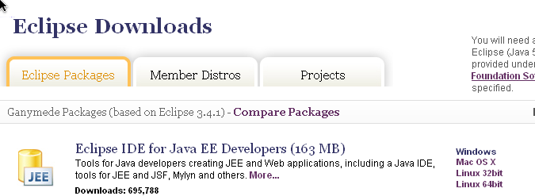
Table of Content:
Getting the GlassFish Plugin for Eclipse
Preliminary note: If you're behind a firewall, make sure you have set an SSL proxy:
Bring up Preferences, then expand General, Network Connections and fill in
the values for your SSL proxy. If you don't have a SSL proxy but a you
have a plain http proxy, be sure to check the checkbox Use this proxy server for SSL
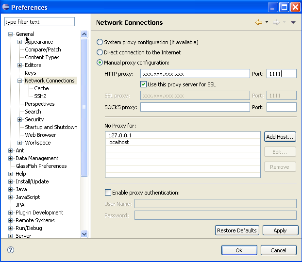
Install the IDE and start it, close the "Welcome" page:
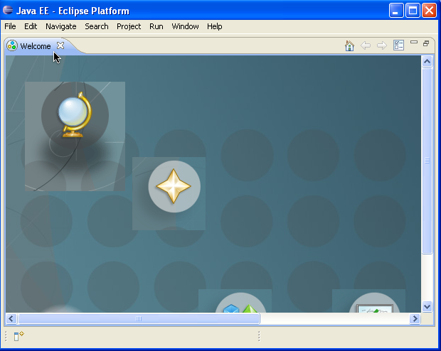
Go to the Java EE perspective (should be the default one) and right
click in the Servers view to select the New->Server menu item:
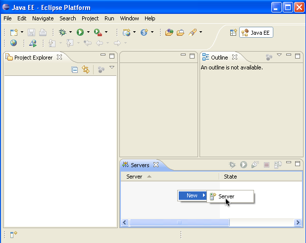
In the following dialog, click on the link called "Download additional server adapters":
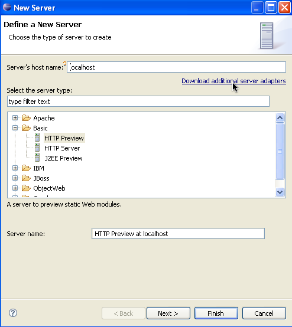
After a while (Internet timing specific), select the GlassFish Category in the list of additional server adapters:
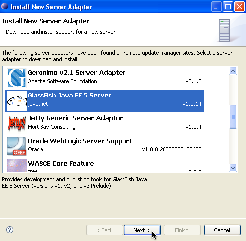
Accept the license (CDDL v1.0):
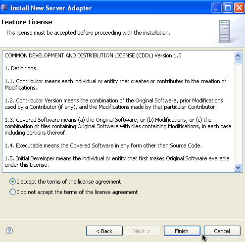
Eclipse will then download the plugin and restart it self. You are now ready to register a GlassFish server to the IDE.
Registering a GlassFish
server to Eclipse
Once you have installed the GlassFish Plugin for Eclipse, you can
register a GlassFish server to the IDE. This is assuming you have on
your system an installation of this server. If you do not have a
GlassFish server installer, you can download one from:
In the "Servers" view, select the popup menu "New | Server ":
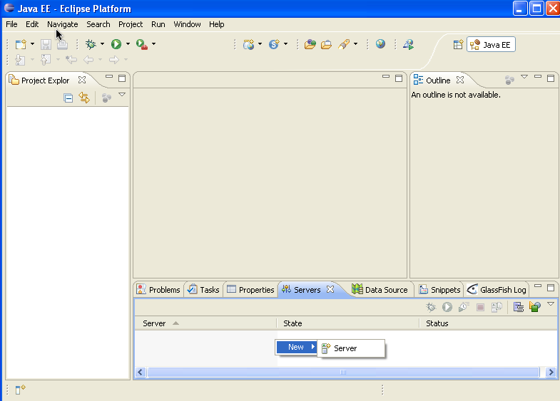
Navigate to the GlassFish category and select GlassFish v3 Prelude (If
you have another server type, select it. Currently, GlassFish v1,
GlassFish v2, GlassFish v3 Prelude and Sailfin v1 application servers
are supported with the Eclipse plugin).
Once the correct server is selected, press the "Next" button of the
wizard to enter the server location on disk.
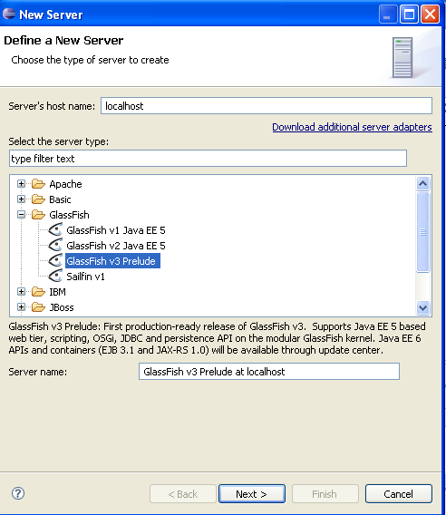
In this step, you need to enter a correct GlassFish installation
directory. For example, in the demo case, the location is
C:/Program Files/glassfishv2-prelude/glassfish.
Notice that the location C:/Program Files/glassfishv2-prelude contains
more than the glassfish application server. It contains as well JavaDB,
the Update Tool and its repository meta-data. So make sure you select
the subdirectory called "glassfish:" under C:/Program
Files/glassfishv2-prelude.
Once a correct server location is entered, the "Next" button of the
wizard is enable.
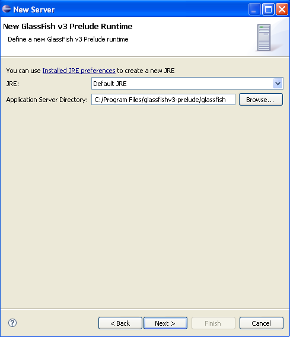
The following step of the wizard has many good default values (that can
be modified later on). By default, the domain named "domain1" in the
standard domain directory is selected. Change the user name/password if
you have installed the GlassFish v3 Prelude with this option. Notice
the "Preserver Sessions Across Redeployment" option is turned on by
default. This is a nice new feature of the GlassFish v3 Prelude
application server.
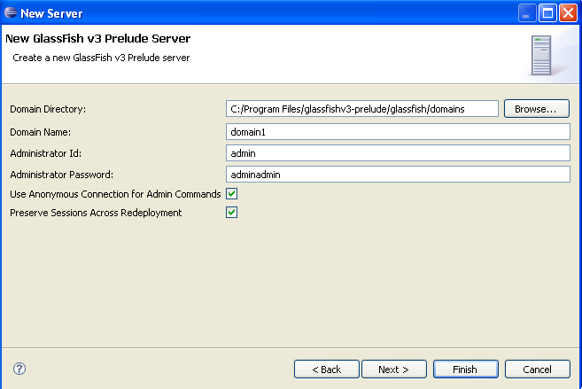
GlassFish Server Usage
from the IDE
Once a new GlassFish is registered to the Eclipse IDE, you'll
see a new entry in the "Servers" view of the IDE. A popup menu is
available on this node, as well as a toolbar for useful actions like
"Start", "Debug" , " Monitor". Double clicking on the server node will
also open the Server Editor where more options can be modified.
Notice the "GlassFish Enterprise Server" popup menu entry that allows a
quick access to the GlassFish Update Center UI, the registration page,
the Aquarium Web site, The Admin console page and the log viewer for
this application server.
the GlassFish Update Center UI, the registration page and The Admin
console page will require the GlassFish server to be up and running in
order to be seen.
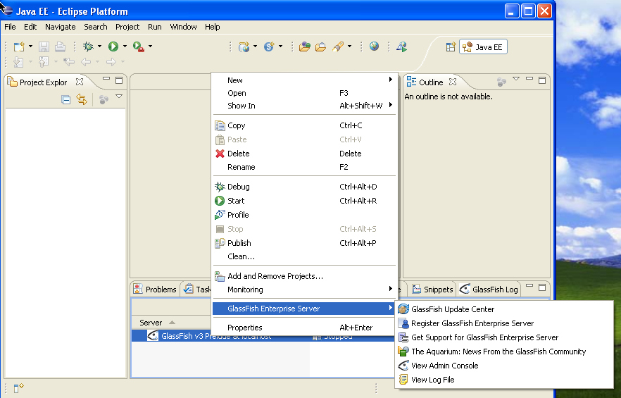
Here is the Aquarium page viewed in the default Eclipse browser (which
is an embedded browser inside Eclipse Editor).

If you double click on the server node in the "Servers" view, the
server editor window is showing up. You can fine tune some parameters
like "Publishing". By default for GlassFish v3 Prelude, the
"Publishing" is setup to "Automatic"with a 0 interval delay.
What is means is that the GlassFish plugin will perform an automatic
redeployment of the Web Application project as soon as you save a file
within this application. This can be a servlet change or a JSP change,
or any class or web artifact in this application. This feature is also
called "Deploy on Save" and for most of the web applications, this can
be very fast (less than a second) with GlassFish v3 Prelude. If this is
not the behavior you want, just select the "Never publish
automatically" option and save your settings.
You can also point to a different existing domain or modify the
"Session Preservation" feature of GlassFish v3 Prelude.
The second tab called "GlassFish Update Center" is active only when the
server is up and running.
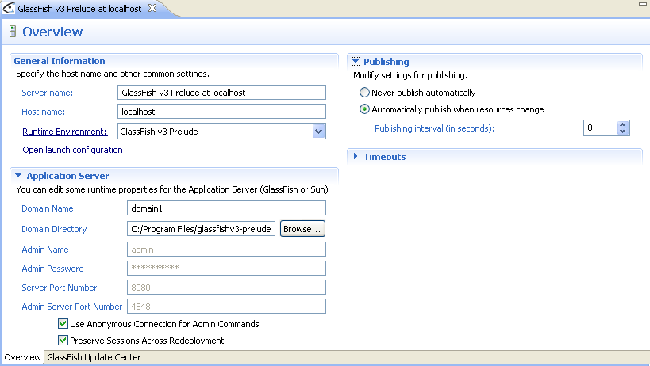
Let's click on the "Start" button (green arrow on the Servers view
toolbar) (or popup menu action) to start the GlassFish v3 Prelude
server. A new Eclipse view named "GlassFish Log Viewer" should show up.
It contains many tabs, one per server instance started by the Eclipse
IDE. The tab is called "server.log" and you can see the server log
location in the tooltip on this tab name.
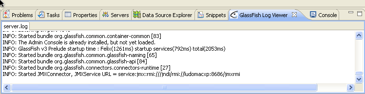
Once the server is started, the "Servers" view will display the correct
State in the view: "Started" and Synchronized":
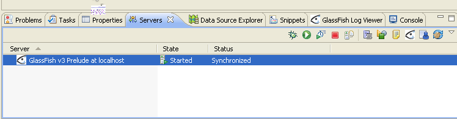
Creating a new Web
Application project targeting GlassFish Server
With the File | New | Projects... menu item, find the "Dynamic Web Project" category to create a new Web Application.
Enter a Project Name in the first field: MyFirstWebApp.
Notice that the "GlassFish v3 Prelude" Target Runtime is selected. If
not, use the combo-box to select it. This will add all the necessary
jar files in the project path so that you can compile with selected
Java EE APIs.Just use the default settings for now and select the
"Finish" button.
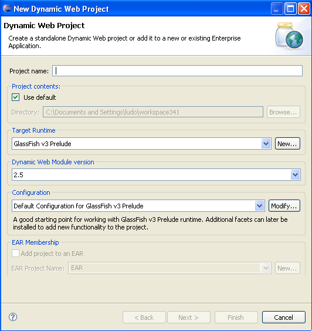
The project is now created and visible in the Project Explorer view.
The GlassFish plugin creates a default index.jsp page and opens it in
the JSP editor.
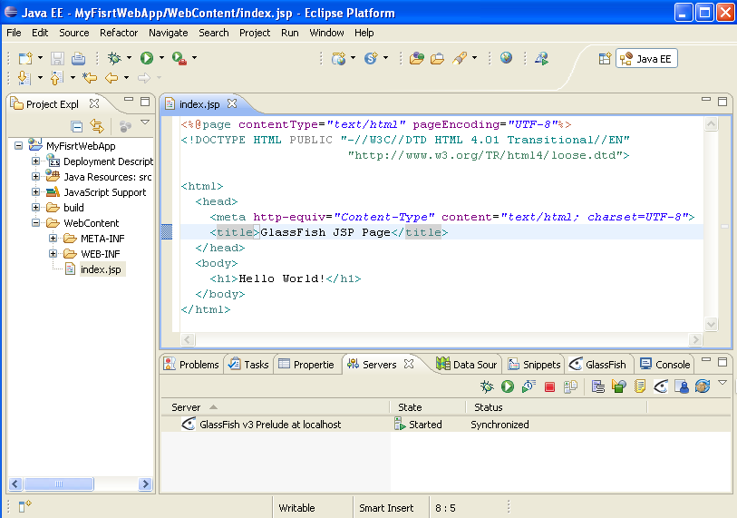
Select the "Run" Menu or toolbar icon, and pick the "Run On Server"
option. Select GlassFish as the server you want to run this application
(You can select the "Always use this server when running this project"
check box to streamline further run invocations.
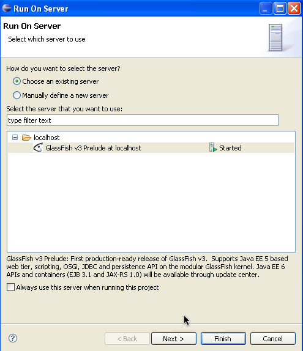
The Web application is then deployed to GlassFish v3 Prelude, as shown
in the server log (it took 100ms to deploy), and the index.jsp page
appears in the Eclipse default Web Browser.
You can now switch back and forth between the index.jsp editor and the
Web Browser view. Each time you save the JSP, the application is
redeployed on Save, and you can reload the page (small yellow icon on
the Browser view) to see the changes immediately.
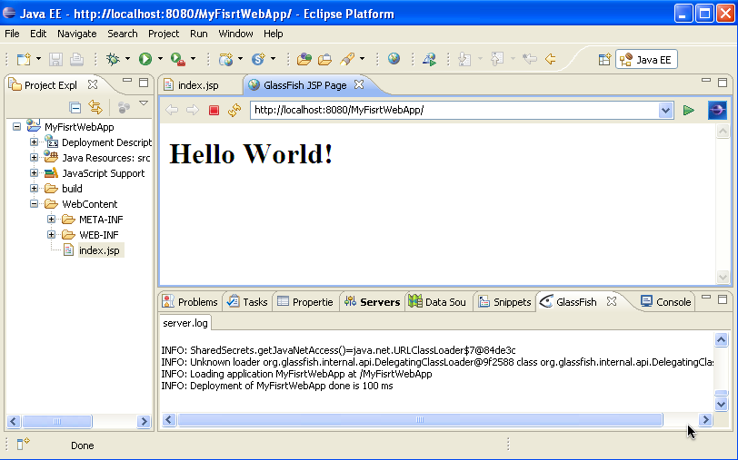
Changing Global
Preferences for the GlassFish Server
The GlassFish Plugin for Eclipse has some global preferences you can
tweak. Use the "Preferences" Menu item and select the GlassFish
Preferences category:
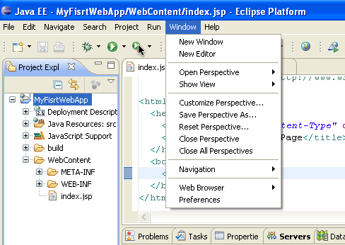
Using the "GlassFish Preferences" category, you can modify the following flags:
- Enable GlassFish Plugin Log information in IDE log file
- This is more for the plugin debugging purpose than anything
else. Turn on this option to see additional traces in the Eclipse log
file specific to the GlassFish Plugin. This option is OFF by default.
- Start the JavaDB database process when Starting GlassFish Server
- GlassFish Server includes Java DB Database and this option
allows you to start it automatically when the server is started. It is
very convenient to do when you work with JPA applications. The options
is ON by default.
- Start the GlassFish Enterprise Server in verbose mode (Eclipse console can be used)
- Using this flag will send all the output log of the Server
inside the Eclipse console as well. This options is OFF by default as
there is a GlassFish specific log view.
- Enable colored rendering in the GlassFish Log Viewer
- For color blind people, you can turn this option OFF.
Otherwise, INFO level messages will be black, WARNING messages will be
yellow, SEVERE messages will be red, and multiple line entries will be
Italic.
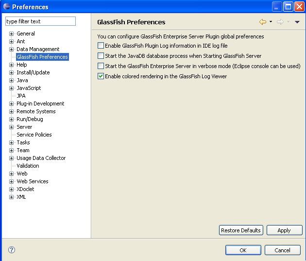
Using the Help menu for
GlassFish
You have access to all the Online Documentation books for GlassFish v2
and GlassFish v3 Prelude via the Eclipse Help menu, under the
"GlassFish Enterprise Server" menu item. Pleas take the time to
read these official documents for learning how to use, administer or
deploy with the GlassFish server. These books are opened in the Eclipse
default Web Browser.
You can also get to the GlassFish Enterprise Server Support page easily from there.
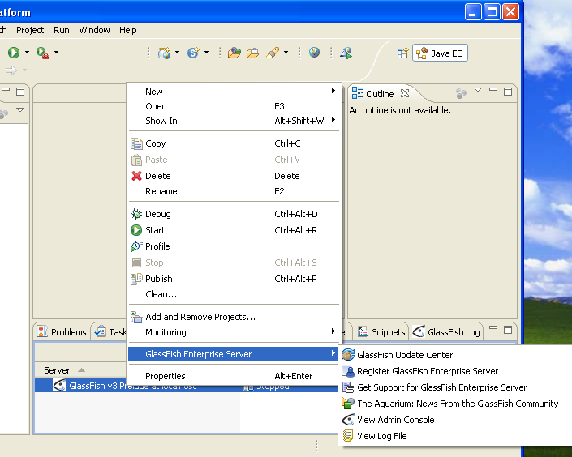
TCP/IP Monitoring Web
Applications with GlassFish
TCP/IP monitoring a nice Eclipse feature that is enable for the
GlassFish application server. It allows to trace HTTP requests made to
your web application. You need first to configure the monitoring by
selecting the server popup menu item named "Monitoring | Properties" as
below:
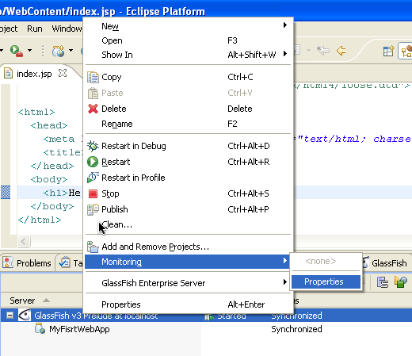
In the Monitoring properties, select the "Add..." button on the right side:
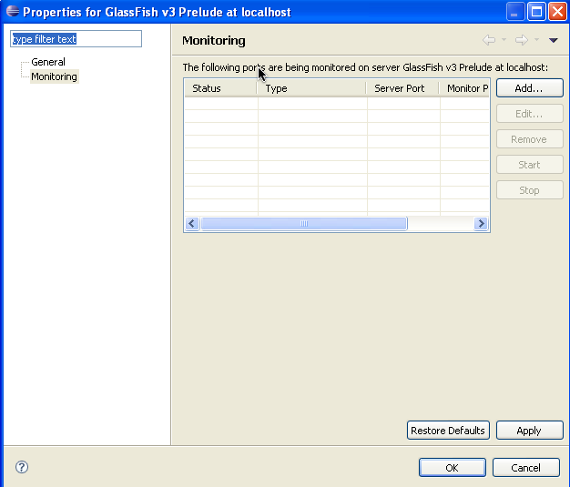
And select the "Server Port" which is the http port used by the
GlassFish server. In our case, it is 8080. The port that will be used
to actually do the monitoring is 8081 as specified in the Monitor Port
field. (Change this port as you need).
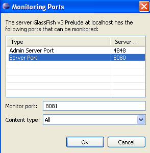
Last step to do is to click on the "Start" button on the right side to start the monitoring on the port 8080 via the port 8081:
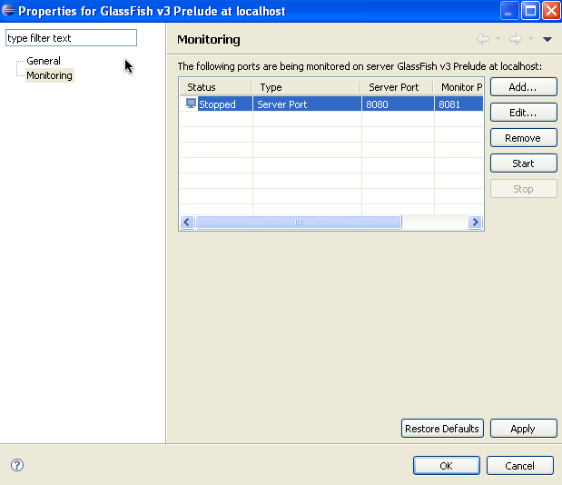
You should see a "Started" status in the Status column. You are now all set to play with the monitoring feature.
Select "Apply" button and "OK".
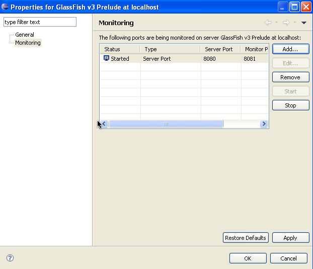
Now, assuming the GlassFish server is started, access a web page using the port 8081 instead of the regular port 8080.
The TCP/IP monitor view should appear below, and fill up with the
traffic between your Web browser and your web application. When you
select each request in the tree at the top left, information about the
request/response is shown, the bottom left of the view will display the
HTTP request that was made to your web application, and the bottom
right will show each response.
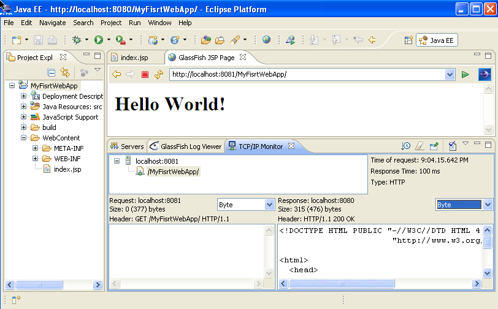
Adding a Servlet and using
Session Preservation feature
Select the New Servlet category to create a new Servlet. Enter a
package name (apkg for example), and a servler name (MyServlet for
example).
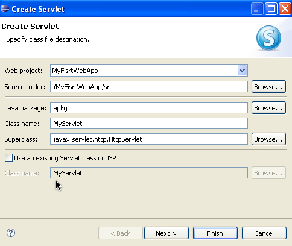
In the Eclipse editor, add more logic to your servlet.
As an example of a servlet code dealing with Sessions, you can use the source content for the MyServlet.java. You can copy paste most of the code.
Save your servlet file, and go the to Browser window to activate the
servlet page (http://localhost:8080/MyFirstWebApp/MyServlet). You
should see something similar to:
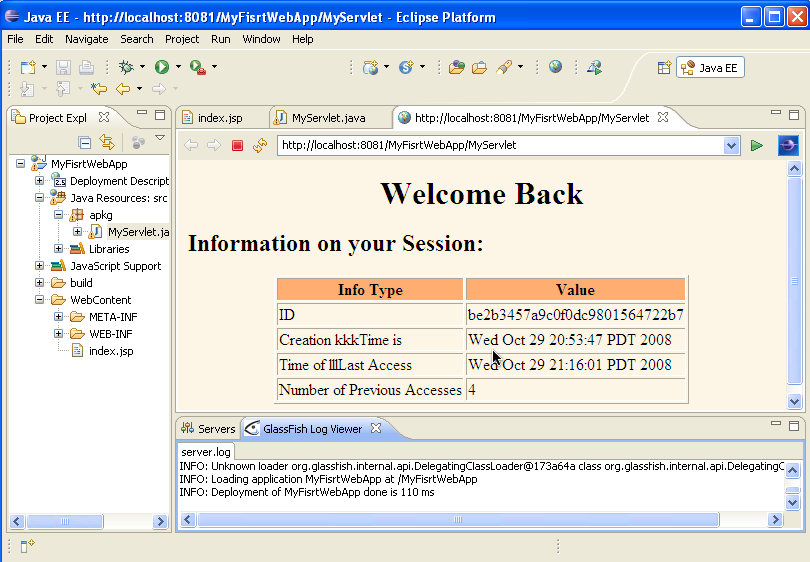
Reload the serlvet web page a few times: you'll see the Number of
Previous Accesses field growing (as seen above, we clicked 4 times on
the page). This counter is stored in the Servlet Session data. We want
now to modify the Servlet source code, and redeploy the web application
to GlassFish v3 Prelude (remember, by default, the "Deploy On Save"
mode is enable, so you just need to save the servlet source file and go
the browser page and click the reload button to see the updated page.
In our test we just add some text in the servlet as shown below: (Update Servlet!!!)
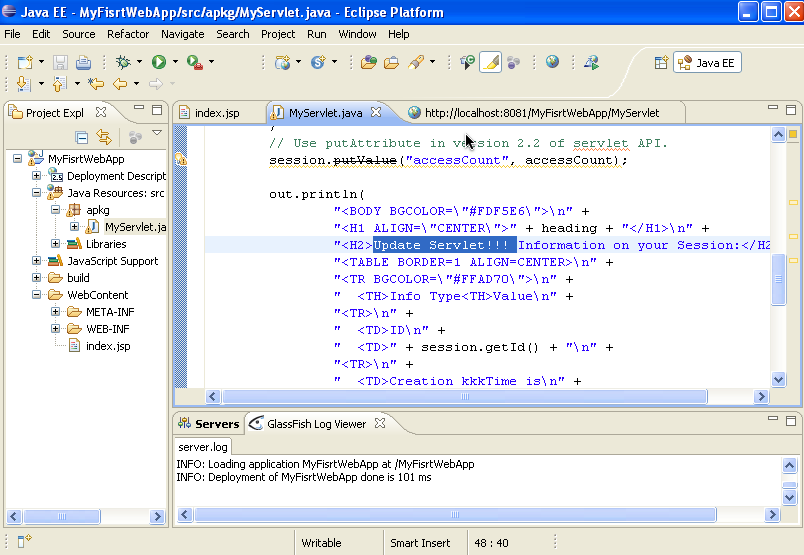
See the update page: the servlet has been redeployed, we see the (Update Servlet!!!)
change we did in the source editor, and the field "Number of Previous
Accesses" is now 5, meaning that the Servlet Session Data was preserved
during redeployment.
This is a very coo feature for GlassFish v3 Prelude, critical when you
are developing/debugging complex Web Applications with complex Session
management (Shopping Cart,...) and you want to keep the information of
your Sessions across redeployments.
Using the Debugger to
debug a Servlet with GlassFish
You can set breakpoints on any Java class (servlet, helper classes,
JPA, Web Services,...) of a Web Application, or on JSP pages (which
contain Java code fragments), using the popup menu available in the
vertical grey bar of the Eclipse Editor (on the left side), and
selecting the first menu item named "Toggle BreakPoint". If Eclipse can
set up a break point on this selected line, a small icon will appear on
the bar. Otherwise, Eclipse will notify that a breakpoint cannot be set
on this line (For example, in HTML fragments of a JSP file).
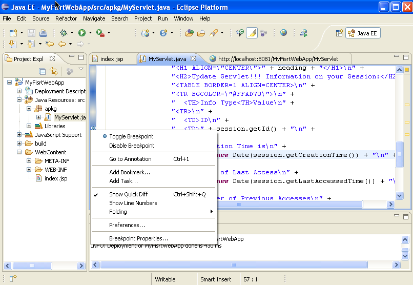
Once a breakpoint is declared, and that GlassFish server has been
started in debug mode via the Servers views "Debug" button, Eclipse
will swich to the Debug Perspective as soon as you activate a Web Page
where a break point has been set:
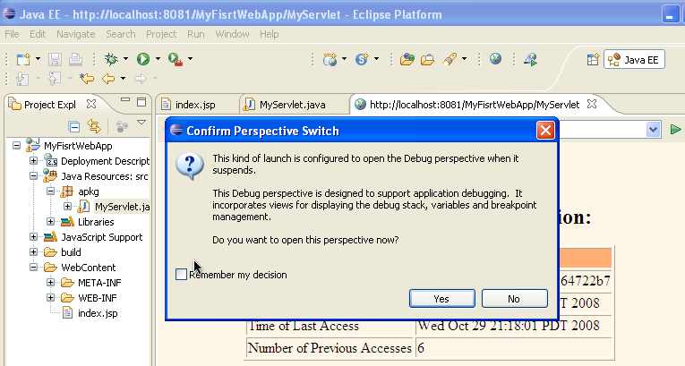
You can now use the feature-rich Eclipse debugger on you Web
Applications or Java EE applications running on the GlassFish
Application Server.
Viewing the GlassFish
Admin Console from Eclipse
There are many administrative features you cannot perform with the
Eclipse IDE. but are available via the GlassFish Admin Console
accessible from the IDE. The Admin console can be launched using the
GlassFish entries in the GlassFish popup menu on the GlassFish server
node. It takes a few seconds to start, so please wait until the page is
fully initialized:
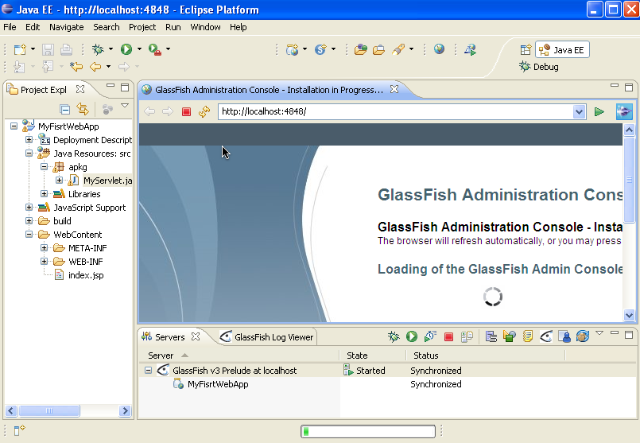
Here is the view of a fully functional GlassFish Administration Console
running in the Eclipse default Web Brower. Of course it assumes that
the GlassFish server is up and running.
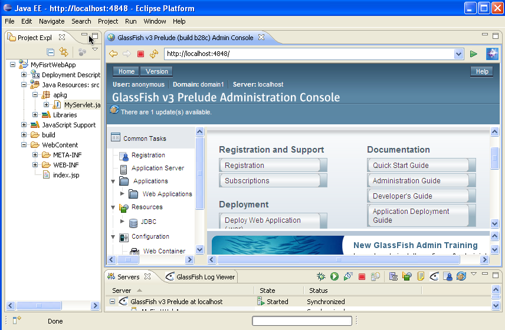
Using the GlassFish v3
Prelude Update Center from Eclipse
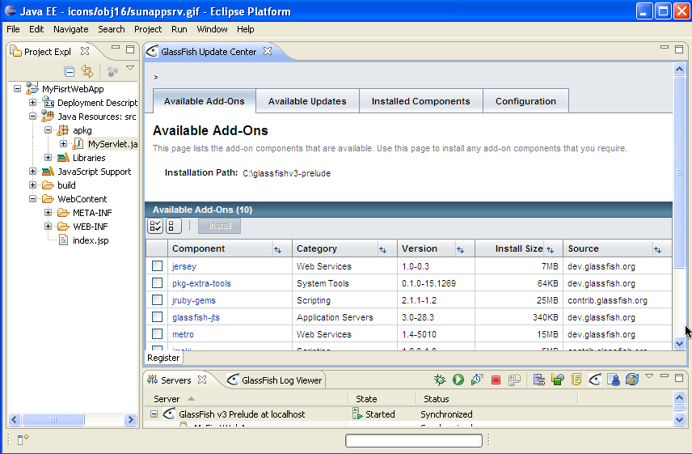
Registrating your
GlassFish installation
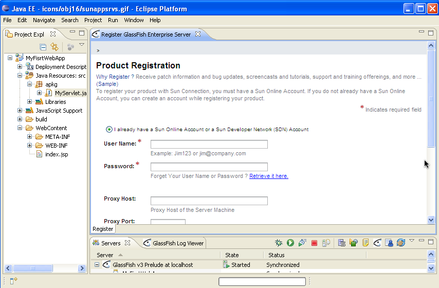
......
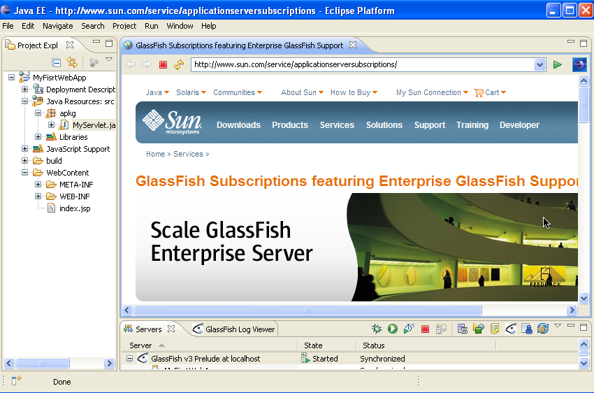
......
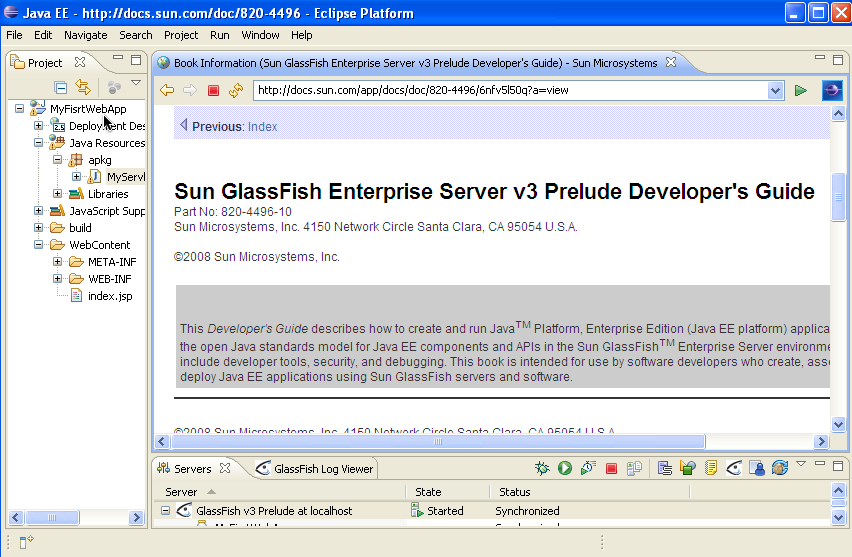
Adding a new Data Source
and registering it to GlassFish
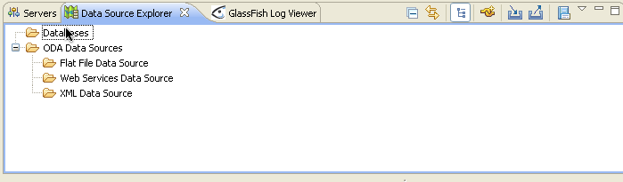
......
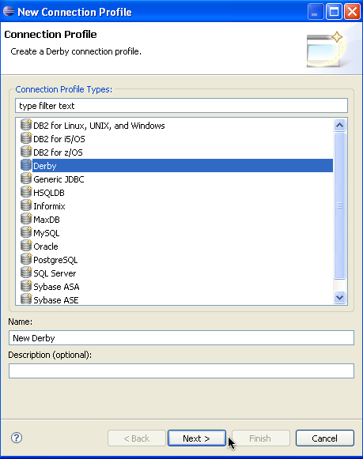
......
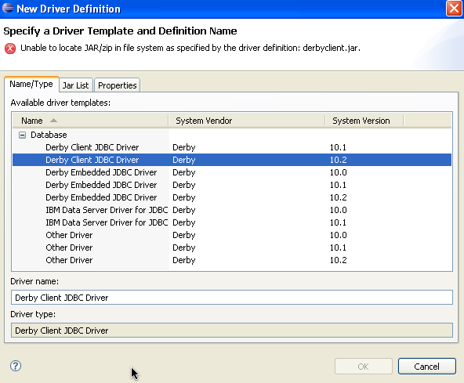
......
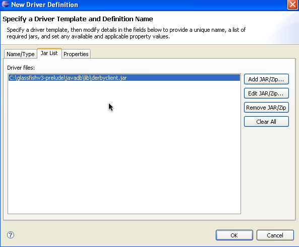
......
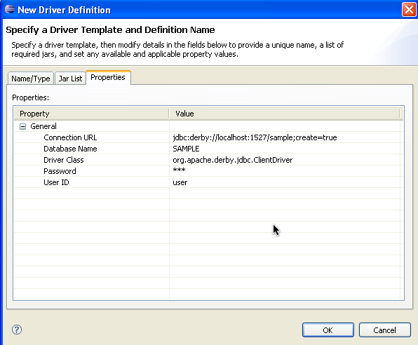
......
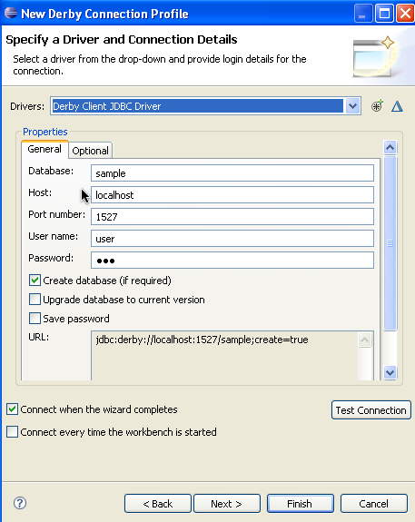
......
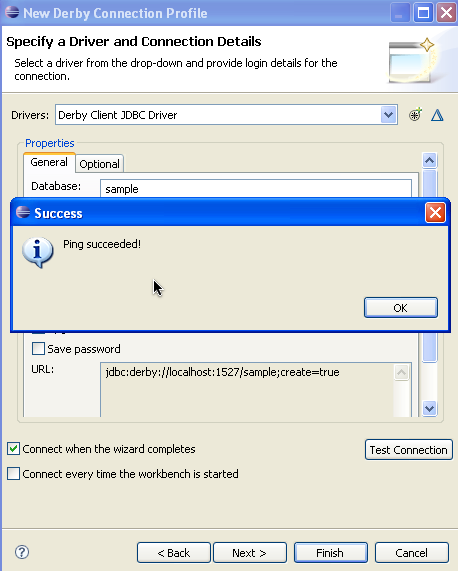
......
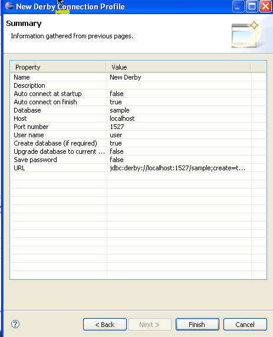
......
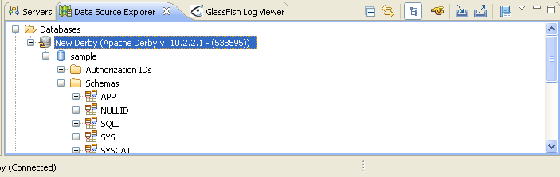
......
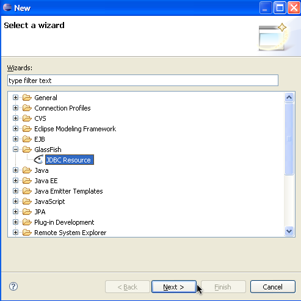
......
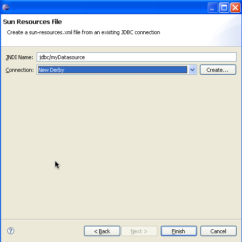
......

......
......
......
Other external tutorials:
- http://wiki.eclipse.org/EclipseLink/Examples/JPA/GlassFishV2_Web_Tutorial